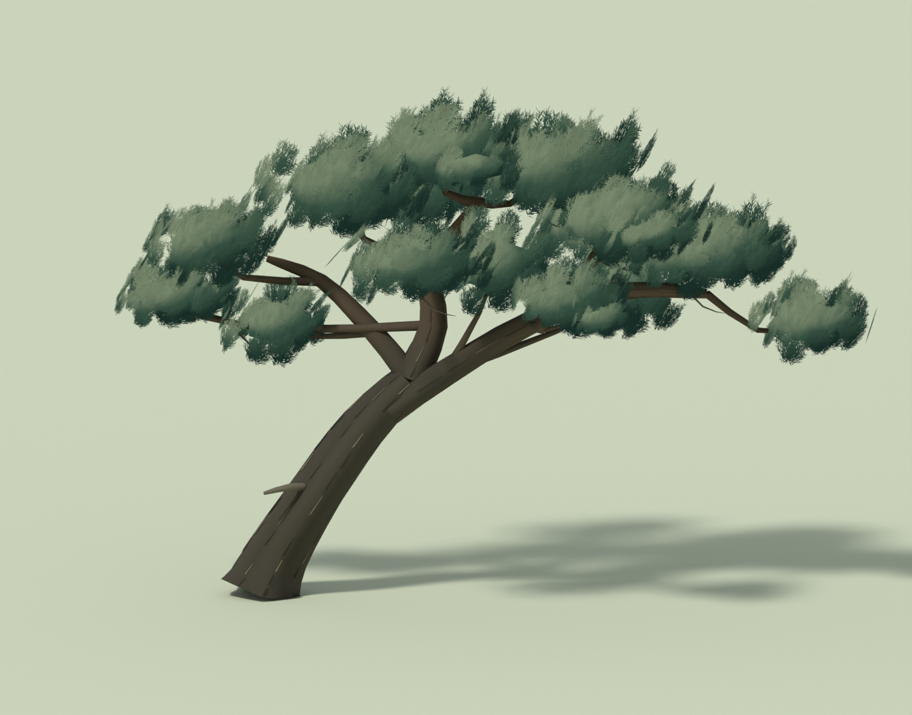
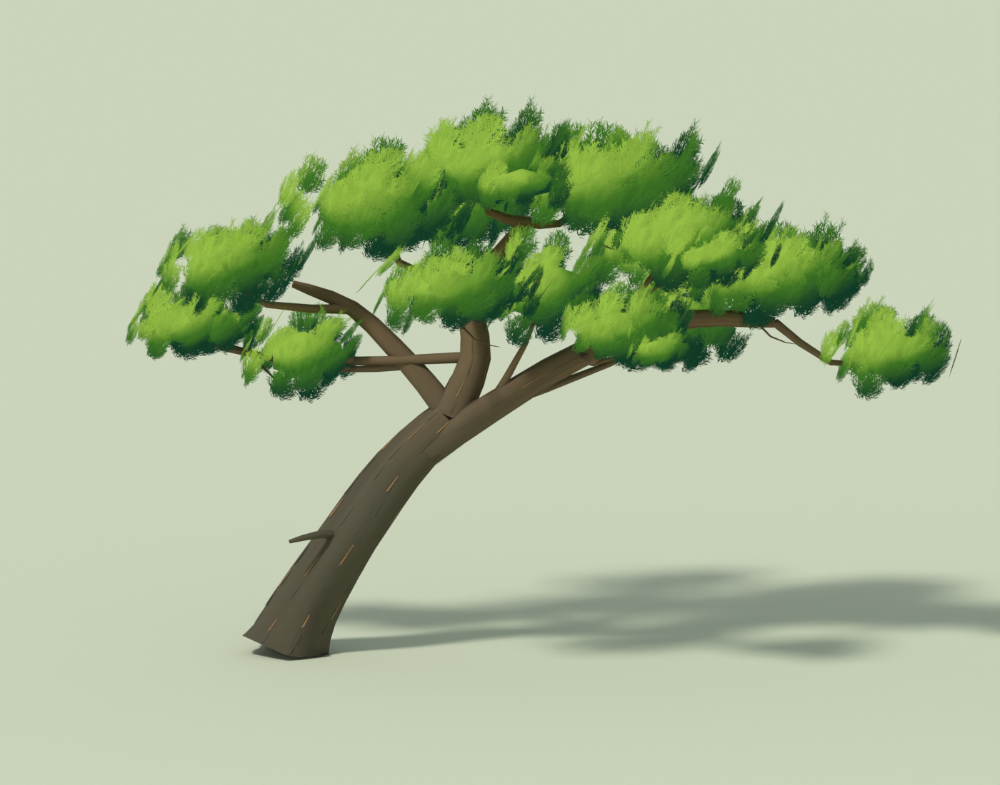
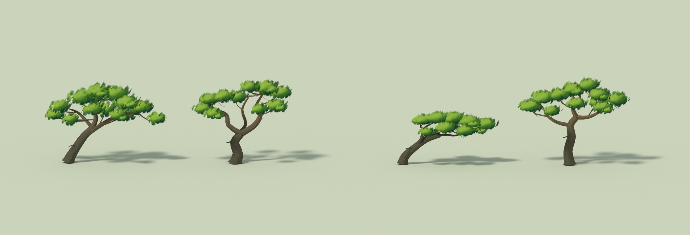
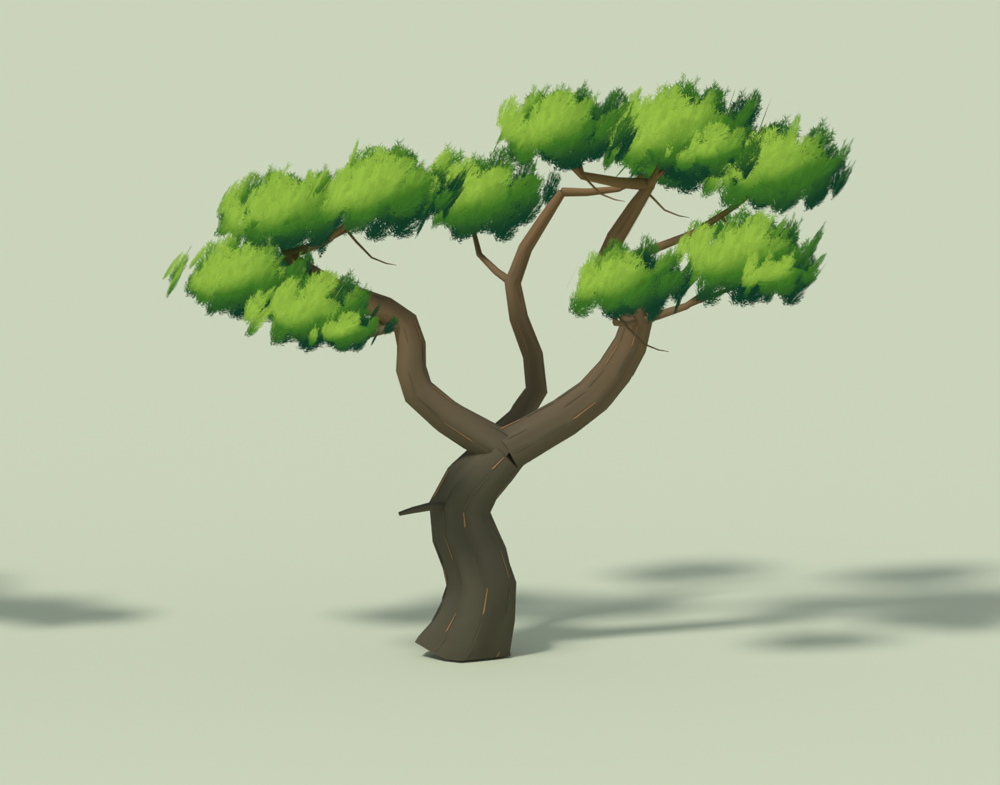
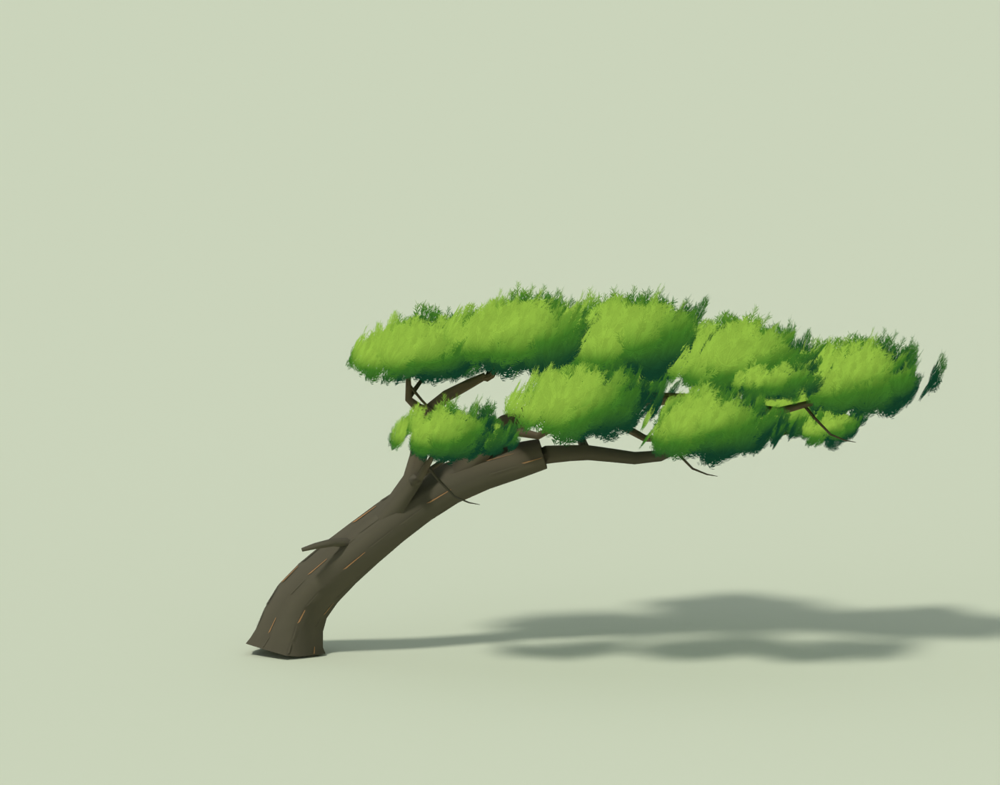
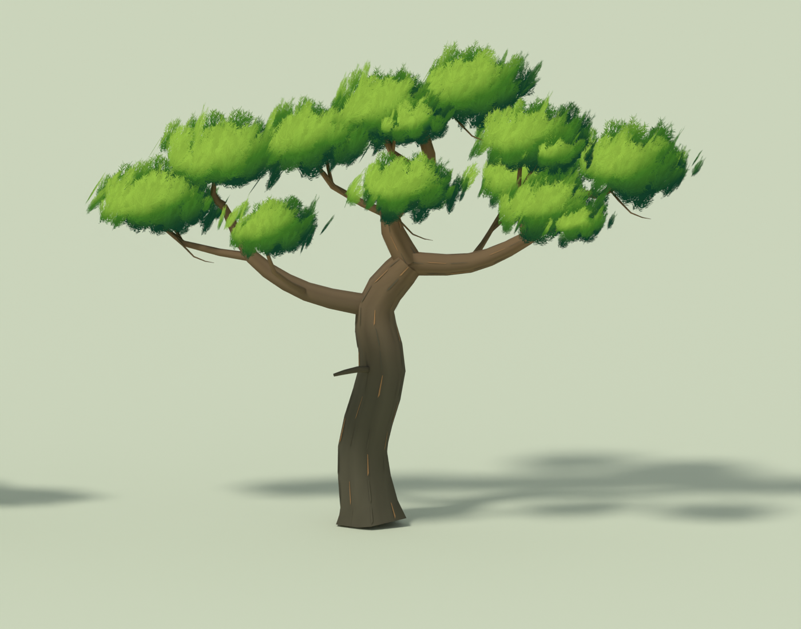
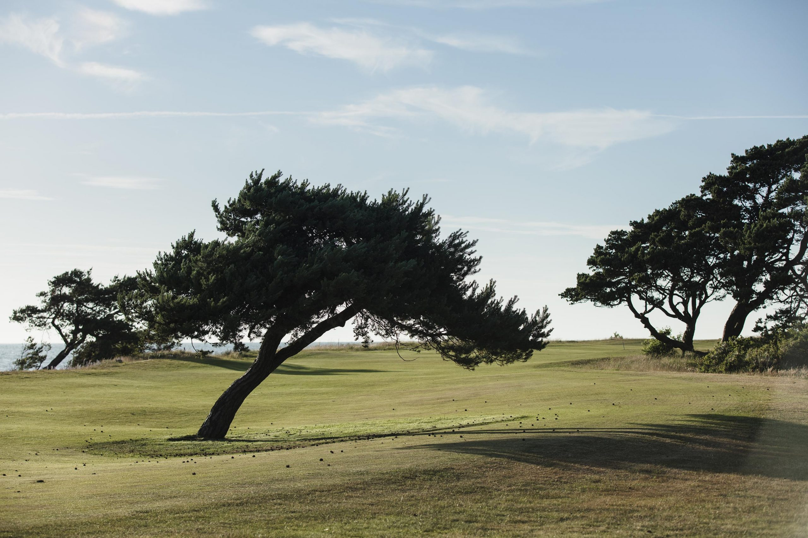
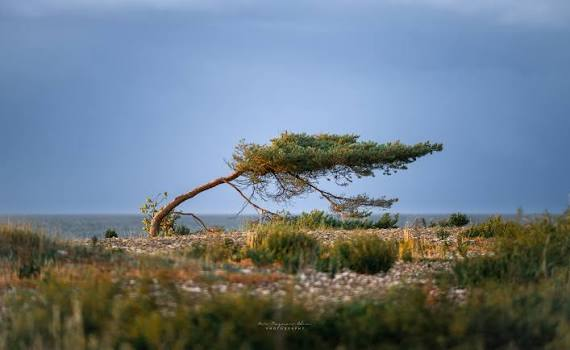
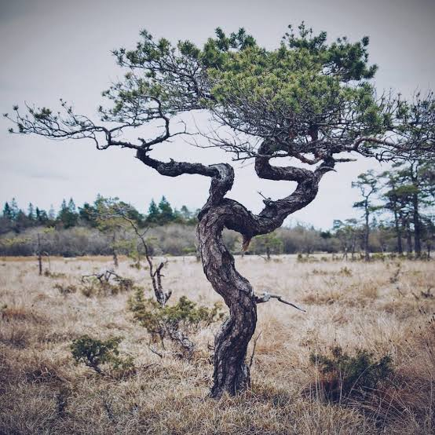
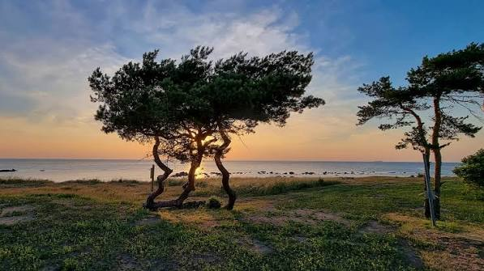

KRONHOLMEN · 21 SEPTEMBER 2026
Nya former · tidigare färger
Beslut: de gamla tallarna behålls på Visby GK. De tre tidigare modellerna med ursprungliga färger och barr är återställda. De nya formerna är sparade här för jämförelse och används inte på banan.
Jämför de tidigare tallarna med de nya formerna i samma färgpalett. Bilderna och båda modellversionerna är sparade för att kunna granskas senare. Det tidigare mörkare förslaget finns kvar här.
Före · nuvarande tallar på bananEfter · arkiverat förslag
Samma kamera, dagsljus, väder och gröna färgpalett i varje bildpar. Trädens placeringar är oförändrade. De nya formerna och barrens konturer är bevarade; bark och barr har de tidigare färgerna.
Färgbytet på samma form
Samma Vindpinad tall, kamera och ljus i Blender. Till vänster det tidigare mörkare förslaget; till höger Visbys ursprungliga färger.

Tidigare förslag · mörkare barr och bark.

Arkiverat färgförslag · samma nya form, tidigare färger.
Fyra växtsätt

Öppna Blender-studien · Referenser och modellanteckningar
01 · Vindpinad tall — huvudmodellen, med klubbens foto som formreferens.

02 · Krokig flerstammig martall — tre ojämna stammar och öppningar i kronan.

03 · Låg kustmartall — stark lutning och lång, låg krona.

04 · Öppen skärmtall — högre stam och bred, oregelbunden krona.
Referensmaterial
Klubbens foto styr huvudmodellens form. De övriga bilderna visar växtsätt; deras ursprungliga fotografer och platser är ännu inte verifierade.

Visby GK / Jacob Sjöman · Originalfoto

Användarens referens 1 · Låg vindform.

Användarens referens 2 · Vriden stam och öppet grenverk.

Användarens referens 3 · Flera stammar och varierade silhuetter.